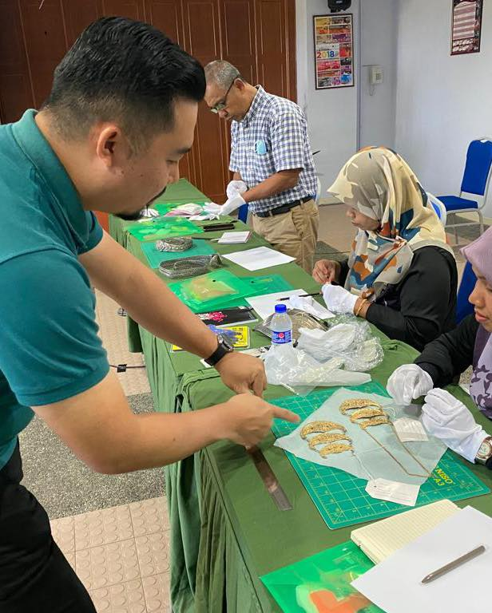
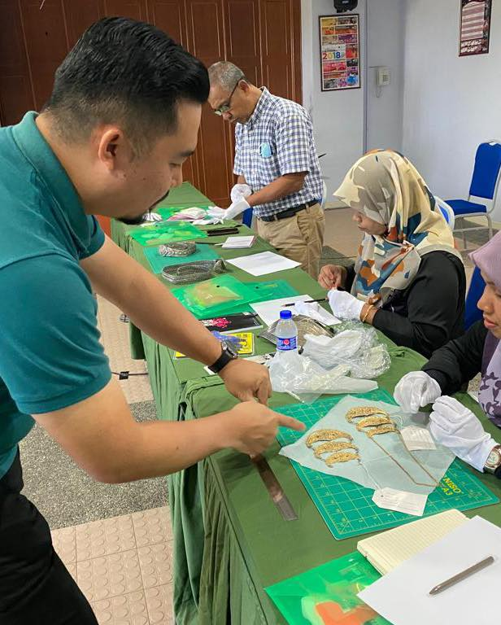
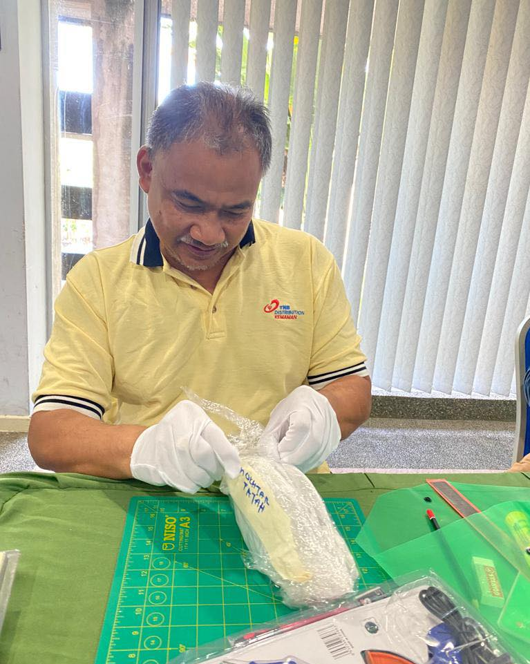
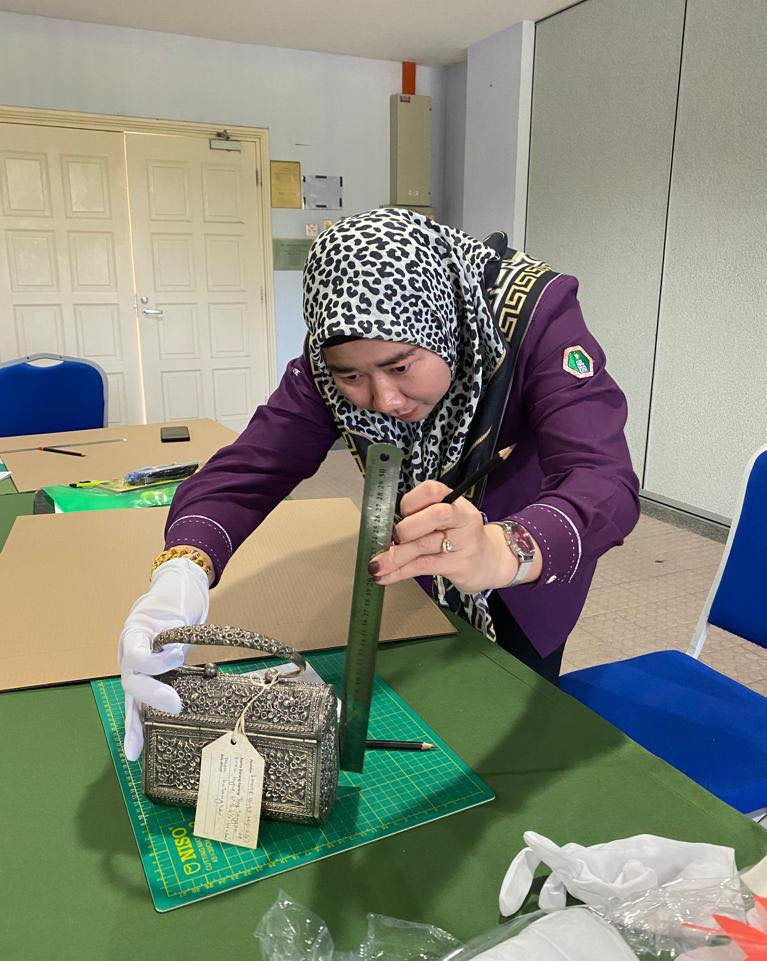
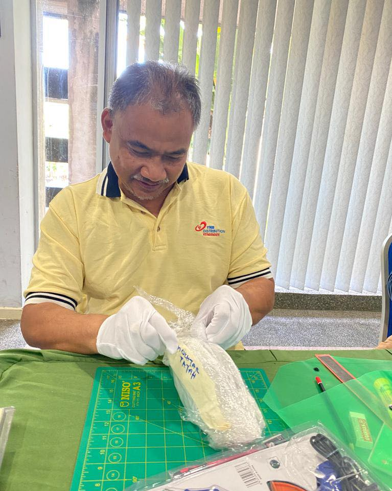
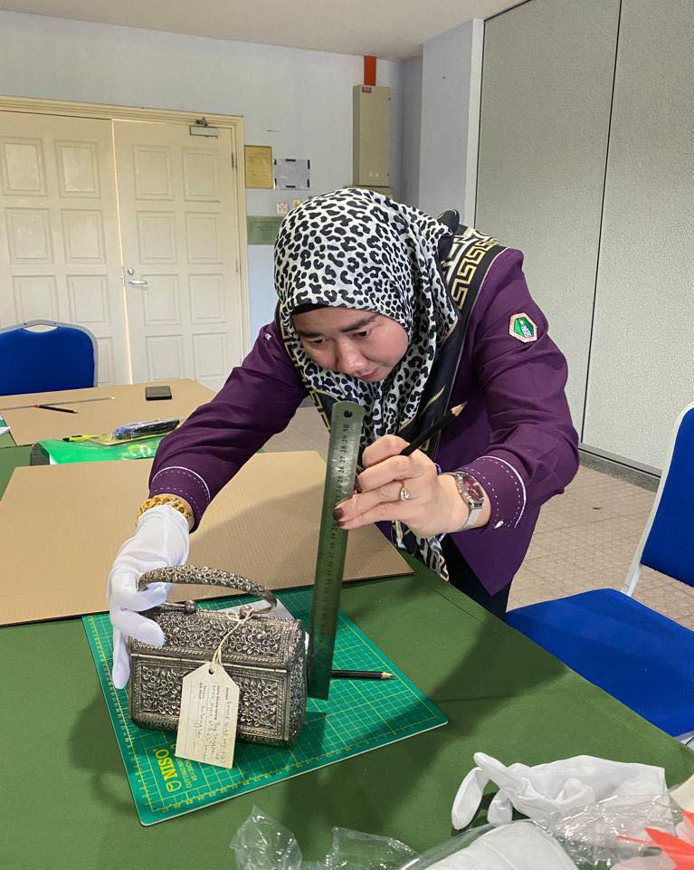

20 September 2022
A total of 20 staff members from the Terengganu State Museum participated in a Workshop on the Preparation of Custom Collection Boxes for Personal Adornments, held at the Telepok Room, Terengganu State Museum Complex. The workshop was conducted by Mr. Awang Ku Mohd Fadli bin Awang Besar, Assistant Curator of the Collection Management Division, and Mr. Mohamad Ruzi bin Sulaiman, Senior Museum Assistant from the Collection Management Division of the Department of Museums Malaysia.
The workshop focused on both theoretical and practical aspects of crafting custom-made boxes for a variety of collections, particularly those related to personal adornments. These boxes are designed to protect the collections from damage or dust. Some of the items selected for custom-made boxes included bags, traditional hats (caping), dokoh (traditional necklaces), belt buckles (pending), belts, and anklets.
 

 


